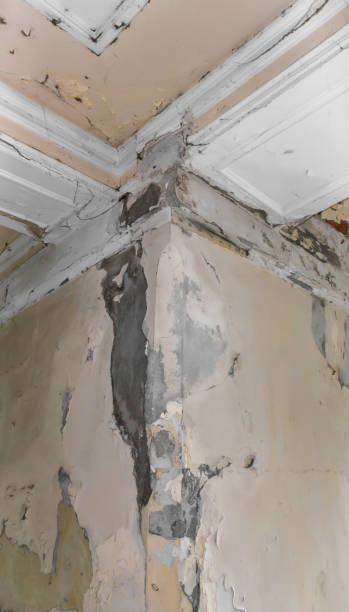
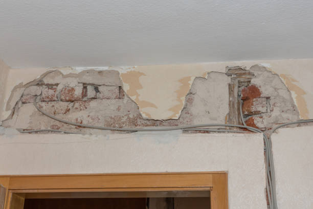

USA - Nationwide
info@waterdamagesusa.pro
USA - Nationwide
info@waterdamagesusa.pro

Breathe easy with our thorough residential mold remediation services . We eradicate mold and ensure a healthy living environment.
Breathe easy! Our residential mold remediation services eliminate mold effectively, ensuring a healthy living environment for your home in Usa - Nationwide.
Residential & commercial Water Damage, Fire Damage and Mold Remediation
Quality services at affordable prices
Immediate 24/ 7 emergency services


In today's world, ensuring your home remains a safe and comfortable environment is a top priority. Water damage can strike unexpectedly, often leaving behind a trail of destruction that requires immediate attention. At Water Damage, Fire Damage and Mold Remediation, we specialize in residential water damage restoration services in Usa - Nationwide. Our expert team is dedicated to restoring your home to its original state, utilizing advanced techniques and state-of-the-art equipment.
Understanding the common causes of water damage is essential. Whether it be from burst pipes, heavy rains, or plumbing failures, the aftermath can lead to mold growth, structural issues, and other serious concerns. That's why we pride ourselves on our rapid response times. When you call us, we arrive promptly to assess the situation and mobilize our resources.
Our process starts with a comprehensive inspection to determine the extent of the damage. We use high-tech moisture detection tools to identify hidden water accumulation, which can often go unnoticed. Once we've outlined the problem areas, we proceed to extract any standing water. Our team employs powerful water extraction equipment, ensuring even the most challenging spaces are cleared of moisture.
Next, we focus on drying and dehumidifying your property. Utilizing industrial-grade fans and dehumidifiers, we systematically eliminate all remnants of moisture. This crucial step helps prevent mold growth, which can set in within a matter of days if left unaddressed.
We understand that water damage restoration is not just a technical process; it’s an emotional journey for homeowners. Our compassionate staff works diligently to keep you informed throughout the restoration process, ensuring you understand every step we take. When it comes to residential water damage restoration Water Damage, Fire Damage and Mold Remediation stands as the beacon of hope for affected homeowners.

In the heart of any thriving business lies a commitment to excellence and an environment that fosters productivity. Water damage in a commercial setting can disrupt operations, cause significant financial loss, and jeopardize safety. At Water Damage, Fire Damage and Mold Remediation, we recognize that time is money, and our emergency commercial water damage restoration services are designed to minimize downtime and restore your business quickly and efficiently.
Our team is composed of trained professionals experienced in handling complex water damage scenarios in various commercial environments, including offices, retail locations, warehouses, and more. With state-of-the-art equipment and techniques, we provide fast water extraction services, thorough drying, and moisture control to ensure your premises are safe and compliant with health regulations.
What sets us apart is our tailored approach to each project. We understand that every business has unique requirements, and we work closely with you to develop a restoration plan that meets those needs. Our dedication to customer satisfaction and high standards of service make us the ideal partner for your commercial water damage restoration needs . Don’t let water damage derail your business; count on us to restore your property and peace of mind quickly.

When disaster strikes and water floods your home or business, the primary concern is immediate extraction. Our emergency water extraction services are geared toward fast response and action. The longer standing water remains, the more extensive the damage may become, compromising the structure and leading to costly repairs and potential health risks due to mold growth.
At Water Damage, Fire Damage and Mold Remediation, our dedicated team is available 24/7, prepared to tackle your emergency with professionalism and expertise. We utilize powerful pumps and vacuums to remove standing water quickly, minimizing damage to your property. Our technicians are trained to assess the extent of the water intrusion, determine the best course of action, and begin restorative measures without delay.
Choosing us means selecting a partnership grounded in transparency and integrity. We understand the stress and uncertainty that accompany water emergencies. Our friendly staff is ready to guide you through the entire process, ensuring you are informed and supported. With years of experience we have earned our reputation as a reliable emergency water extraction service provider.

Flooding can wreak havoc on your property and pose serious health risks. The aftermath of a flood includes contaminated water, potential structural damage, and the risk of mold growth. At Water Damage, Fire Damage and Mold Remediation, we offer comprehensive flood damage cleanup services designed to restore your property effectively. Our expert team works quickly to remove water, disinfect affected areas, and start the restoration process to return your home to a safe and livable condition.
Why Choose Us? We understand the emotional toll that flood damage can take on homeowners. Our compassionate approach prioritizes your needs and restores not only your property but also your peace of mind. Our technicians are trained in advanced water extraction and restoration techniques, allowing us to handle any level of flood damage with expertise. With our commitment to using eco-friendly products and techniques, we ensure a safe and healthy environment for you and your family .

Dealing with a sewage backup is not just a nuisance; it's an immediate emergency that poses severe health risks and requires expert intervention. At Water Damage, Fire Damage and Mold Remediation, we understand the gravity of sewage contamination and offer specialized sewage backup cleanup services designed to address this hazardous situation swiftly and effectively.
Sewage backups can occur due to various factors, including blockages, heavy rainfall, or infrastructure failures. Our team is equipped with advanced cleaning and decontamination tools to handle sewage spills safely. We prioritize protecting your health and safety by ensuring that contaminants are removed and that affected areas are thoroughly cleaned, sanitized, and restored.
What makes us stand out is our unwavering commitment to quality and the specialized training of our team members. Each technician is knowledgeable about the safest methods for handling sewage and is prepared to manage emotionally challenging scenarios with professionalism and compassion. If you experience sewage backflow, don’t hesitate; choose Water Damage, Fire Damage and Mold Remediation for cleanup services that restore your home to a safe and healthy state.

Basements are prone to water damage due to their below-ground location, making them vulnerable to floods, leaks, and humidity issues. At Water Damage, Fire Damage and Mold Remediation, we specialize in Basement Water Damage Restoration in Usa - Nationwide. Our skilled technicians are equipped to handle various issues, from minor leaks to severe flood damage, ensuring your basement is dry and safe.
Choosing us means you’re choosing expertise. We employ advanced moisture detection equipment and create customized drying plans tailored to each unique situation. Our objective is to prevent mold growth and maintain the structural integrity of your property. With our commitment to customer service and thorough restoration work, you’ll have peace of mind knowing your basement is in capable hands. Trust Water Damage, Fire Damage and Mold Remediation to restore your basement to a healthy, functional space.

When severe weather strikes, the aftermath can leave homeowners and business owners grappling with extensive damage. At Water Damage, Fire Damage and Mold Remediation, we understand the challenges posed by storms and offer exceptional storm damage restoration services . Our comprehensive approach ensures that your property is restored effectively, allowing you to regain control after nature’s fury.
Storm damage can take on many forms – from flooding and roof damage to fallen trees and debris. Our team of specialists is trained to assess all types of storm-related damages quickly. We utilize advanced assessment tools to give a clear picture of what repairs are necessary to restore your property safely.
Once we assess the damage, we move quickly into action. Our priority is to stabilize your property and prevent further damage. We have the equipment required to manage any standing water, ensuring that it is extracted promptly. After water removal, we initiate our drying process using powerful industrial fans and dehumidifiers designed for large areas.
In addition to water-related issues, storm damage can also lead to structural problems. Whether a tree has fallen on your home or wind has caused roof damage, our team is equipped to provide repair services. We handle everything from temporary board-ups to full-scale reconstruction, ensuring that your property is safe and secure.
What sets Water Damage, Fire Damage and Mold Remediation apart is our commitment to excellent customer service during the restoration process. We understand that the emotional toll associated with storm damage can be overwhelming, and we focus on providing compassionate support and clear communication throughout your recovery journey. Trust us for your storm damage restoration needs ; we are here to help you rebuild and recover.

Water damage can manifest in various areas of your home, particularly in ceilings and walls. Indications of water damage might include discoloration, sagging, or peeling paint. If left unattended, these issues can lead to mold growth and further damage. At Water Damage, Fire Damage and Mold Remediation, we specialize in ceiling and wall water damage repair addressing not just the symptoms but the root causes of the damage to ensure long-lasting solutions.
Why Choose Us? Our team comprises experts in structural repairs and restoration. We use only the highest quality materials and techniques to ensure the integrity and aesthetics of your home are restored. Clients trust us for our thorough inspections and quality repairs, as we take every aspect of your damage seriously. Our goal is to provide a hassle-free experience from start to finish.

Water damage can ruin carpets and upholstery, leading to unpleasant odors, stains, and potential health threats. Quick action is essential to prevent irreversible damage. At Water Damage, Fire Damage and Mold Remediation, we provide specialized carpet and upholstery water damage repair services . Our trained professionals can effectively treat and restore your carpets and furniture, allowing you to maintain a clean and healthy living environment.
Why Choose Us? Our team understands the intricacies involved in fabric care and restoration. Using state-of-the-art cleaning technologies and eco-friendly products, we ensure that your carpets and upholstery are cleaned thoroughly and restored to their original condition. Our dedication to customer service means you can expect professionalism and quality work every time. Choose Water Damage, Fire Damage and Mold Remediation for all your carpet and upholstery repair needs – your satisfaction is our success.

When water damage occurs, one of the most critical aspects of recovery is proper drying and dehumidification. At Water Damage, Fire Damage and Mold Remediation, we offer specialized drying and dehumidification services designed to ensure that your property is completely dry and protected against secondary damage caused by excess moisture.
In the wake of water-related incidents, many property owners underestimate the extent to which moisture can infiltrate walls, floors, and hidden spaces. Our trained team utilizes state-of-the-art moisture detection tools to evaluate all affected areas thoroughly. This step is crucial in identifying hidden pockets of water that cannot be seen but can wreak havoc on your property’s integrity.
Once we have identified all areas that require attention, we initiate our drying process. We employ industrial-grade dehumidifiers and powerful air movers to create optimal airflow and moisture control. The goal is to bring all affected areas back to a safe level of humidity quickly, preventing the possibility of mold growth, which can happen rapidly in damp conditions.
We also monitor the drying process continuously, utilizing moisture meters to ensure that we achieve the desired dryness in all materials. Our team is highly trained in handling all types of situations, from residential properties to larger commercial spaces.
Choosing Water Damage, Fire Damage and Mold Remediation for your drying and dehumidification needs means placing your trust in experts who are committed to restoring your property to its pre-damage state efficiently. Our dedication to quality and customer satisfaction sets us apart, making us a leader in drying and dehumidification services .

Water damage can compromise the very structure of your home or business, making expert repair services a necessity. At Water Damage, Fire Damage and Mold Remediation, we specialize in structural water damage repair in Usa - Nationwide, ensuring that your property is safe, secure, and restored to its original condition.
The implications of structural water damage can be severe, resulting in weakened foundations, compromised walls, and safety hazards. When you choose us, you’re opting for a team that understands the gravity of these issues and responds with urgency. Our qualified professionals take the time to conduct a thorough inspection, assessing all areas affected by water damage.
Upon identifying the extent of structural damage, we devise a complete restoration plan. Our team has the experience and knowledge to handle everything from rebuilding walls to reinforcing foundations. We use high-quality materials and follow industry best practices to ensure that all repairs provide lasting results.
At Water Damage, Fire Damage and Mold Remediation, we believe in a comprehensive approach to structural water damage repair. We don’t just fix the visible issues; we also address any underlying conditions that might lead to future problems. This forward-thinking mindset ensures that your property remains safe and secure long after we leave.
Communication is vital during the repair process. Our team remains in constant contact with you, updating you on our progress and answering any questions you may have. Our reputation for excellence in structural water damage repair speaks to our commitment to quality and customer service. Trust us with your restoration needs, and let us help you bring your property back to its former glory.

Appliance leaks can cause significant damage if not addressed promptly. At Water Damage, Fire Damage and Mold Remediation, we provide Appliance Leak Water Damage Repair services that focus on restoring any areas affected by leaks from washers, dishwashers, refrigerators, or other appliances. Our experienced team conducts thorough inspections to assess damage and implement effective drying and restoration techniques.
Choosing us ensures you’re receiving a thorough approach tailored to your specific situation, including addressing potential mold growth and preventing future issues. Trust Water Damage, Fire Damage and Mold Remediation to handle your appliance leak damages with expertise and care, allowing you to return to a safe and secure living or work environment.

Your crawl space often remains an overlooked area of your home, but when water damage occurs here, it can lead to significant problems. At Water Damage, Fire Damage and Mold Remediation, we specialize in Crawl Space Water Damage Restoration addressing unique challenges related to moisture intrusion in these confined spaces. Our knowledgeable team conducts thorough inspections, identifying the source of water concerns while performing effective water removal and drying services.
We understand that a dry crawl space is vital for the overall health of your home. Our techniques help prevent mold growth and structural deterioration, ensuring that you maintain a safe living environment above. Trust Water Damage, Fire Damage and Mold Remediation to safeguard your crawl spaces with trusted restoration practices, enhancing your home’s living conditions.

When water seeps into hardwood flooring, the aftermath can quickly become a serious concern. If not addressed promptly, water damage can warp and ruin your beautiful floors. At Water Damage, Fire Damage and Mold Remediation, we specialize in expert hardwood floor water damage repair services bringing back their natural beauty and integrity.
Hardwood floors are especially susceptible to water damage due to their porous nature. Whether the source is a plumbing leak or flooding, the risks increase if water isn’t extracted and dried efficiently. Our team understands these challenges and is trained to evaluate and restore hardwood flooring effectively.
When we arrive, we conduct a detailed assessment to determine the extent of the damage to your hardwood floors. Utilizing moisture detection tools allows us to identify hidden water accumulation and plan our restoration accordingly.
Once we understand the situation, we quickly implement our water extraction processes. Our specialized equipment helps us efficiently remove moisture from the surface and subfloor. Then, we proceed with drying your hardwood floors, using air movers specifically designed for wooden surfaces to circulate air and draw out moisture effectively.
Repairing hardwood floors involves gentle techniques to minimize further damage while ensuring a thorough restoration. We may need to replace boards that are beyond repair, or we could treat them with methods designed to restore their original sheen.
At Water Damage, Fire Damage and Mold Remediation, we realize the aesthetics and value of your hardwood floors. That’s why we strive for perfection in our work while providing informative updates about the restoration process. For hardwood floor water damage repair trust Water Damage, Fire Damage and Mold Remediation to restore your floors to their original luster.

Frozen pipes can lead to catastrophic water damage once they thaw and burst. Swift action is required to minimize damage. At Water Damage, Fire Damage and Mold Remediation, we specialize in frozen pipe water damage repair services in Usa - Nationwide. Our team is trained to handle the complexities of this type of damage, ensuring your home or business is restored to its original state quickly and effectively.
Why Choose Us? With extensive experience in dealing with frozen pipe incidents, our technicians can quickly assess the situation and begin an immediate response. We focus on preventing future occurrences by offering advice and solutions to protect your plumbing system. Choose us because we prioritize your needs and ensure you feel confident in our capabilities to restore your property efficiently.

Smoke and soot can cause damage that lingers long after a fire. At Water Damage, Fire Damage and Mold Remediation, we provide specialized Smoke and Soot Damage Cleanup services that are critical to restoring your property effectively after a fire. Our professional team understands that smoke can infiltrate every corner of your home or business, leaving behind odors and residues that require immediate remediation.
Our meticulous cleaning techniques ensure that every surface is addressed, removing soot from walls, ceilings, and other affected areas, while also working diligently to neutralize smoke odors. Partnering with us means you are choosing a committed team focused on returning your environment to its original state. Trust Water Damage, Fire Damage and Mold Remediation for thorough cleanup services that restore your comfort and safety.

The aftermath of a fire can be devastating, both emotionally and structurally. At Water Damage, Fire Damage and Mold Remediation, we specialize in structural fire damage restoration committed to helping you recover as seamlessly as possible.
After a fire, property owners are often left with burnt walls, warped structures, and unsafe environments. That’s why our team of experts is committed to providing thorough assessments and comprehensive restoration plans tailored to your specific situation. Upon your call, we arrive promptly to evaluate the damage.
Our first priority is ensuring the safety of the property. Our trained professionals will assess risk factors and begin the restoration process as soon as it is deemed safe to do so. We utilize advanced technology to evaluate structural integrity and identify areas that require repairs.
Once we outline the restoration plan, we begin the essential tasks of removing damaged materials, reconstructing compromised areas, and fortifying structures for future safety. Our goal is to restore the building’s integrity while minimizing interruptions during the restoration process.
At Water Damage, Fire Damage and Mold Remediation, we pride ourselves on impeccable service, transparency, and dedication to our clients. We know that recovery from fire damage can be traumatic, and we aim to alleviate the stress involved. For structural fire damage restoration trust us to help you rebuild your future, starting today.

After a fire, many homeowners’ immediate concern is not just the damage to the structure, but also to their cherished possessions. Fire-damaged furniture presents unique challenges that require expert restoration techniques. At Water Damage, Fire Damage and Mold Remediation, we specialize in fire-damaged furniture restoration services ensuring you do not have to replace everything you've lost.
Understanding that furniture can be a significant investment, our team approaches each restoration with meticulous attention to detail. We assess the extent of fire and smoke damage as soon as we arrive. Our goal is to salvage and restore as much of your furniture as possible, allowing you to hold onto those precious items.
We utilize specialized cleaning methods that remove soot, stains, and odors from various types of materials, including wood, upholstery, and metal. Using eco-friendly solutions, we focus on preserving your furniture while ensuring it is thoroughly cleaned and restored to its former glory.
Throughout the restoration process, we maintain open lines of communication, providing you updates while answering any questions you may have. What sets Water Damage, Fire Damage and Mold Remediation apart is our commitment to quality service and customer satisfaction. For fire-damaged furniture restoration choose us to protect your memories and restore your valuable possessions.

After experiencing a fire, lingering smoke odors can be an unbearable reminder of the traumatic event. Effective odor removal requires specialized methods and expertise. At Water Damage, Fire Damage and Mold Remediation, we specialize in odor removal after fire services ensuring your home smells fresh and clean once again.
Smoke odors can seep into walls, carpets, and upholstery, making them extremely difficult to eliminate with standard cleaning methods. Our trained professionals utilize advanced techniques and equipment to tackle these stubborn odors effectively.
Initially, we assess the extent of smoke odors present in your property, identifying all sources and affected materials. Our team employs a systematic approach, utilizing ozone treatments and air purification devices that neutralize odor molecules rather than just masking them.
Our goal is to provide you with a living space that feels welcoming while ensuring that any reminders of the fire event are completely eradicated. During the process, our team keeps you informed, explaining the techniques we use, and providing guidance to prevent future odor issues.
With Water Damage, Fire Damage and Mold Remediation, you can trust that we are committed to your needs during what can be a challenging time. For reliable odor removal after fire services allow us to help you reclaim your space and peace of mind.

After a disaster, securing your property is a top priority. At Water Damage, Fire Damage and Mold Remediation, we offer Emergency Board-Up Services in Usa - Nationwide to help protect your home or business while restoration efforts are underway. With our prompt response, we quickly assess the damage and install secure board-ups to prevent further intrusion of elements or vandalism.
Trust is essential during recovery, and our experienced team understands the importance of prompt and reliable service. We ensure that your property is protected from potential hazards, allowing you to focus on the recovery process. With Water Damage, Fire Damage and Mold Remediation, you’re investing in a team that prioritizes your security and peace of mind during challenging times.

When a fire affects your home or business, it often leaves behind damaged belongings that hold sentimental and monetary value. Content cleaning and restoration after fire services are vital to salvaging these cherished items. At Water Damage, Fire Damage and Mold Remediation, we specialize in meticulous content cleaning services ensuring your possessions are carefully restored.
Our team understands the importance of recovering and restoring your belongings following a fire incident. We prioritize the thorough assessment of damaged content, including clothing, electronics, and personal items. We have specialized protocols to clean and restore various materials effectively.
Utilizing advanced techniques such as ultrasonic cleaning and ozone treatment, we’re able to remove soot, smoke residues, and odors that cling to belongings. Our commitment to eco-friendly cleaning methods ensures a safe and thorough restoration process without toxic aftereffects.
Furthermore, we document each step of the restoration process, keeping an organized inventory that can assist with insurance claims for your peace of mind. We recognize the emotional toll that fire damage can impose, and our compassionate team is dedicated to restoring not just your belongings but also your sense of comfort.
Count on Water Damage, Fire Damage and Mold Remediation for exceptional content cleaning and restoration after fire services . Our commitment to quality and customer satisfaction sets us apart as leaders in the restoration industry.

Fires can severely disrupt business operations, leading to financial losses and reputational damage. At Water Damage, Fire Damage and Mold Remediation, we specialize in fire damage restoration for commercial properties . Our dedicated team is prepared to react swiftly to minimize downtime and restore your business to its former state.
Why Choose Us? We recognize the unique challenges that commercial fire restoration presents. With extensive experience in the industry, we tailor our restoration processes to meet the specific needs of your business. Our commitment to communication ensures you’re kept informed every step of the way. Choose Water Damage, Fire Damage and Mold Remediation for your commercial restoration needs where we focus on helping your business recover quickly and efficiently.

Electrical fires can be devastating, often resulting in extensive property damage and posing significant safety risks. At Water Damage, Fire Damage and Mold Remediation, we specialize in electrical fire damage repair services ensuring a comprehensive approach to restoring safety and integrity to your home or business.
Upon reporting a fire incident, our trained technicians arrive swiftly to assess the damage caused by the fire. We understand that electrical fires often leave behind additional hazards that require professional handling. That’s why our first step will focus on ensuring the safety of the property and identifying areas needing urgent attention.
Our skilled professionals are adept at evaluating the electrical systems and wiring that may have been affected by the fire. We prioritize thorough inspections of all electrical components to determine which systems require immediate repairs or replacements.
At Water Damage, Fire Damage and Mold Remediation, we not only focus on repairing visible damage but also address underlying issues that may have caused the fire initially. Our goal is to prevent future incidents by ensuring your electrical systems comply with safety standards and are fully operational.
We understand the emotional toll related to fire damage, and we’re here to help. Our dedicated team provides compassionate support throughout the repair process, ensuring you feel informed and comfortable.
Choose Water Damage, Fire Damage and Mold Remediation for reliable electrical fire damage repair services . We combine expertise and care for quality restoration for you and your property.

The kitchen is often the heart of the home, and a fire in this area can be particularly devastating. At Water Damage, Fire Damage and Mold Remediation, we specialize in kitchen fire damage restoration services helping you regain the joy of cooking and family gatherings in a safe environment.
Why Choose Us? Our team is equipped to handle fire damage repairs specific to kitchen areas, from structural repairs to appliance restoration. We focus on restoring the heart of your home, ensuring it is safe and functional. Clients choose us for our dedication to quality and customer satisfaction throughout the restoration process.

Navigating the aftermath of fire damage is challenging — both emotionally and financially. One of the most strategic ways to manage recovery is through effective insurance claim assistance. At Water Damage, Fire Damage and Mold Remediation, we provide comprehensive insurance claim support services for fire damage in Usa - Nationwide, helping you reclaim what you deserve.
Understanding the claims process can be overwhelming, especially during a time of distress. Our experienced team steps in to guide you through every aspect of the claims process, ensuring you are well-informed and confident in your approach.
Once a fire incident occurs, we conduct a detailed assessment of the damage to provide the documentation necessary for your insurance claim. Our team understands what information insurance companies will require and can offer you relevant insights to enhance your claims process success.
From start to finish, we advocate on your behalf, negotiating with insurance adjusters and addressing any questions they raise. Our goal is to ensure that you receive fair compensation for both your damage and living expenses during your time of recovery.
At Water Damage, Fire Damage and Mold Remediation, we believe that your focus should be on healing and restoration, not paperwork. For reliable insurance claim assistance for fire damage trust our dedicated team to help you navigate this critical aspect of fire recovery.
Mold issues in commercial properties can lead to severe health risks, operational disruptions, and costly repairs. At Water Damage, Fire Damage and Mold Remediation, we provide specialized commercial mold remediation services dedicated to restoring your business environment to a safe and healthy state.
Understanding the urgency that comes with mold growth in commercial settings, our team responds rapidly to assess the situation. We conduct thorough inspections to locate moisture sources and determine the extent of mold contamination across your property.
Once the assessment is complete, we develop a targeted remediation plan that addresses the unique needs of your business. Our process comprises not only mold removal but also strategies designed to prevent future occurrences.
Our team utilizes state-of-the-art equipment and methods to contain, remove, and treat affected areas, ensuring that the indoor air quality remains safe for your employees and customers. We prioritize restoration timelines while minimizing disruption to your daily operations.
At Water Damage, Fire Damage and Mold Remediation, our commitment to excellence extends beyond remediation. We also offer educational insights on maintaining a mold-free environment moving forward. Trust us for effective commercial mold remediation that protects your business and promotes a healthy workplace.
Black mold, often associated with serious health issues, can be a daunting challenge for homeowners. If you suspect that you have black mold in your residence, prompt attention is critical. At Water Damage, Fire Damage and Mold Remediation, we specialize in professional black mold removal services committed to ensuring your home is safe and healthy.
Understanding the risks posed by black mold, our experienced team is trained in effective assessment and remediation strategies. Once contacted, we respond swiftly to conduct a comprehensive inspection, identifying the source of mold growth and assessing the level of contamination.
Our removal process is methodical and thorough. We employ specialized containment techniques to prevent spores from spreading during removal, ensuring your home remains free of further contamination. We remove any affected materials, followed by thorough cleaning and treatment of surfaces where mold was present.
After the removal process, our team conducts air quality tests to verify the effectiveness of our remediation efforts. We believe that communication is key during this process, so we ensure that you stay informed every step of the way.
For effective black mold removal services in Usa - Nationwide, choose Water Damage, Fire Damage and Mold Remediation. Our commitment to safety and quality garners trust, ensuring a mold-free environment for you and your family.
Early detection of mold is essential for preventing health issues and structural damage. At Water Damage, Fire Damage and Mold Remediation, we offer comprehensive mold inspection and testing services to effectively assess and identify potential mold problems in your home or business.
Our trained professionals arrive ready to evaluate your property for signs of mold growth. We conduct meticulous visual inspections, looking for moisture-prone areas, visible mold, and water damage indicators. If we suspect mold presence, we proceed with testing protocols to accurately determine the type and extent of mold issues present.
Using advanced testing methods, such as air sampling and surface swabbing, we collect samples that are sent to a certified laboratory for analysis. This information is critical for developing an effective remediation plan based on the specific type of mold and its potential impact on health.
At Water Damage, Fire Damage and Mold Remediation, we understand the need for timely intervention in mold-related issues. Our team is dedicated to returning clear results and ensuring you understand the inspection process and findings. Choose us for expert mold inspection and testing guiding you toward a safe and mold-free environment.
Attics can create ideal conditions for mold growth, especially if there are leaks or inadequate ventilation. At Water Damage, Fire Damage and Mold Remediation, we provide thorough attic mold remediation services in Usa - Nationwide, ensuring that your home’s air quality and structure remain sound.
Our process begins with a rigorous inspection to determine the extent of mold contamination in your attic. We also assess potential moisture sources, whether from leaks, humidity, or poor ventilation. Understanding these underlying issues is critical for effective remediation.
Once the assessment is complete, we initiate containment procedures to prevent mold spores from spreading throughout your home during the cleaning process. Our team utilizes specialized equipment to safely remove all contaminated materials while following industry standards for safety and effectiveness.
After removal, we apply protective treatments to safeguard against future mold growth. We also implement ventilation improvements or other solutions tailored specifically to your attic, ensuring that conditions remain unfavorable for mold development.
At Water Damage, Fire Damage and Mold Remediation, our commitment to quality and safety has made us a trusted provider of attic mold remediation . Let us help you reclaim your space and restore a healthy environment in your home.
Basements are often prone to moisture, creating ideal conditions for mold growth. At Water Damage, Fire Damage and Mold Remediation, our Basement Mold Removal services tackle the complexities associated with mold in these often-overlooked spaces. Our skilled team performs detailed inspections to identify moisture sources and effectively remove existing mold, ensuring your basement is dry and safe.
We utilize advanced techniques to stop mold in its tracks while addressing potential moisture problems for the long term. With our experience and commitment to quality service, you can trust Water Damage, Fire Damage and Mold Remediation to restore your basement as a healthy, functional area of your home.
Crawl spaces are often overlooked but can become serious breeding grounds for mold. At Water Damage, Fire Damage and Mold Remediation, we specialize in crawl space mold remediation in Usa - Nationwide, employing professional methods to ensure your crawl space is safe and free from harmful mold.
Why Choose Us? Our thorough inspection and treatment processes are designed to eliminate mold and prevent its return. We use cutting-edge technology and eco-friendly solutions to maintain safety and effectiveness. Residents choose us for our in-depth knowledge and dedication to restoring healthy environments.
Bathrooms are often breeding grounds for mold due to high humidity levels and water exposure. At Water Damage, Fire Damage and Mold Remediation, we specialize in Bathroom Mold Removal Services ensuring that your bathroom remains a clean and safe space. Our experienced team identifies mold sources, effectively removing present mold and implementing preventive measures to keep your bathroom mold-free.
We emphasize thoroughness and safety throughout the remediation process, using non-toxic methods that protect your family and home. With our exceptional service, you can expect a fresh and inviting bathroom environment. Choose Water Damage, Fire Damage and Mold Remediation to keep your bathroom healthy and beautiful.
Mold can thrive in HVAC systems, which can lead to contamination of your indoor air quality and health issues for occupants. At Water Damage, Fire Damage and Mold Remediation, we specialize in HVAC mold remediation services dedicated to ensuring your air systems are safe and functioning properly.
Our process begins with a thorough inspection of your HVAC systems. Our trained technicians identify signs of mold growth, evaluate the system’s functionality, and outline potential moisture sources conducive to mold development.
We focus on every component of the HVAC system, including ducts, coils, and filters. Our experienced team utilizes specialized equipment and techniques to remove all traces of mold, restoring your HVAC system’s efficiency and safety.
Once remediation is complete, we provide guidance on maintaining a mold-free HVAC system, focusing on regular maintenance schedules, effective humidity control, and filter maintenance.
Choose Water Damage, Fire Damage and Mold Remediation for HVAC mold remediation services where we prioritize your health by ensuring that your indoor air is clean and free of contaminants.
After a water event, mold growth can rapidly follow if moisture is not adequately addressed. At Water Damage, Fire Damage and Mold Remediation, we specialize in Post-Water Damage Mold Remediation services in Usa - Nationwide, ensuring a comprehensive approach to managing mold risks after water damage occurs. Our trained specialists understand the urgency of mold remediation, employing swift actions to remove excess moisture and prevent mold proliferation.
We conduct thorough assessments and implement tailored solutions for effective mold removal. With our dedication to customer satisfaction and the health of your environment, you can trust Water Damage, Fire Damage and Mold Remediation to protect your living space from the threats of mold growth post-water damage.
USA - Nationwide Water Damage, Fire Damage and Mold Remediation Pros
(877) 848-1711
info@waterdamagesusa.pro
09.00 AM - 09.00 PM
09.00 AM - 12.00 PM